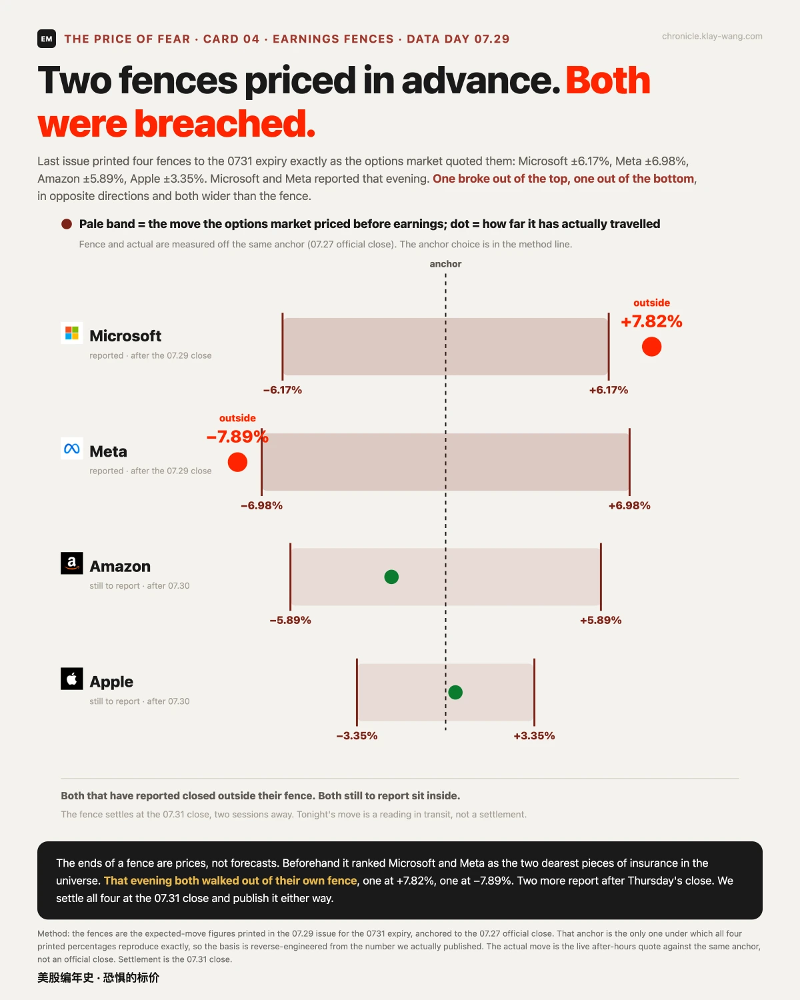
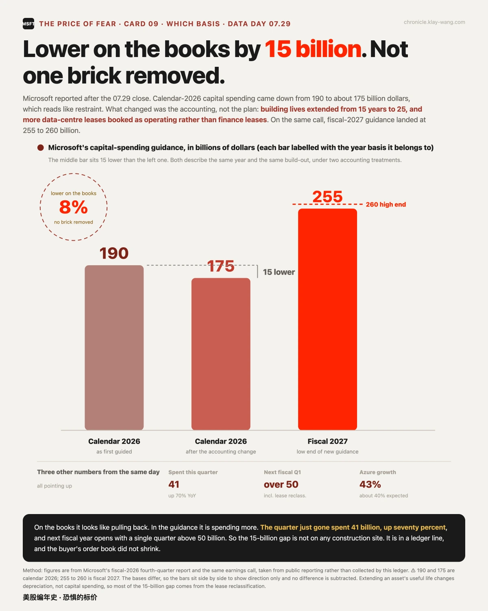
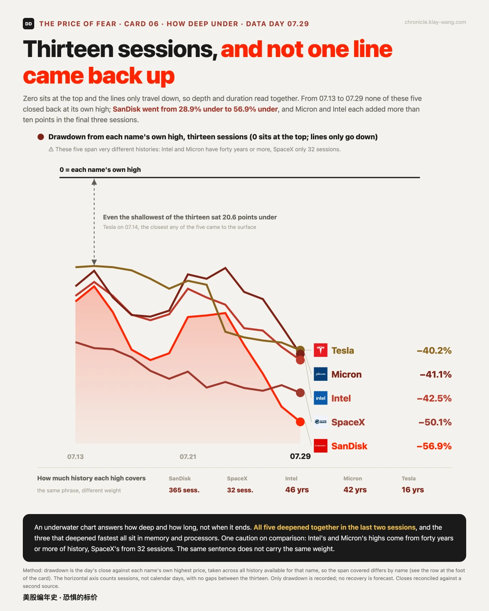
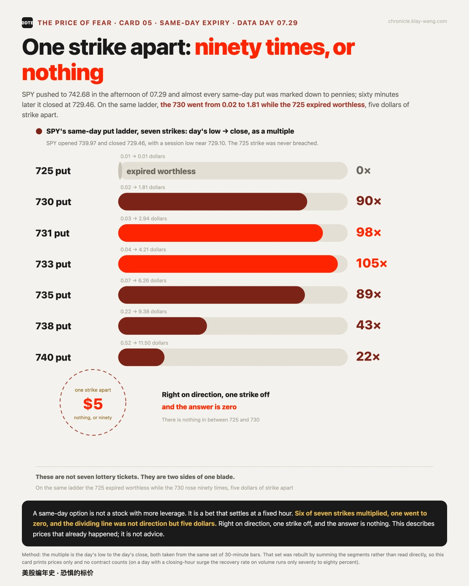

美联储要加息？微软说：接着花，还要多花· 07-29 · 7.27-7.31
• 决议日全线跳水：利率没动，但 9 比 3 的投票里三位官员主张加息；17 只票的午后最高全部落在 14:00 到 15:00 这一个小时里，收盘只剩谷歌两支收涨
• 围栏开奖，两只都出栏：事前印好的波动围栏，微软 +7.82% 向上走出，Meta −7.89% 向下走出，方向相反、幅度都比栏宽
• 保险价一天跳了 15.1 位：温度计从 73 跳到 88/100，近三年只有 5 天跳得更猛；而两年后到期的保险一整天只动了 0.04
决议日的一小时：十七只票同时见顶
一句话：会开完的那一刻不是转折点，转折点在一小时后，而且是全场一起转的。
07.29 的日历只有一件大事：14:00 美联储出决议。利率维持在 3.5% 到 3.75% 没动，但投票是 9 比 3，克利夫兰的 Hammack、明尼阿波利斯的 Kashkari、达拉斯的 Logan 三位主张加息 25 个基点（据 CNBC、Yahoo Finance）。发布会上沃什说得更直白：没有软性通胀目标（据 Motley Fool 转述）。当天 30 年期美债收益率升到 2007 年以来最高。
盘面把这句话消化了整整一个小时。SPY 上午一路阴跌到 732.02，午后回升，14:30 发布会开场后继续拉，14:45 见全天最高 742.68；然后头也不回，收 729.46，全天最低就落在收盘前那 15 分钟，而那一根是全天成交量最大的一根。
把 17 只票各自从午后最高量到收盘：17 只全部下跌，一只不剩，每一只的午后最高都挤在 14:00 到 15:00 这一个小时内。中位数跌 3.14%，最深的闪迪跌 9.68%。连当天唯二收涨的谷歌两支，从午后最高也是跌的。
盘前完全是另一幅画面：17 只挤在 2.37 个百分点里，13 只是涨的；到收盘散开到 10.89 个百分点，17 只里 16 只换了名次。分歧不是在盘前定的，是在盘中那一个小时里拉开的。


围栏开奖：两只都走到了栏外
一句话：围栏是市场自己标的价，这一晚它把自己标的两道栏都撞穿了。
上一期我们把四只票到 0731 的波动围栏原样印了出来：微软 ±6.17%、Meta ±6.98%、亚马逊 ±5.89%、苹果 ±3.35%。当晚微软与 Meta 盘后交卷：微软营收 900.1 亿美元、Azure 增速 43% 超出约 40% 的预期，盘后对锚价 +7.82%；Meta 则对锚价 −7.89%（据 CNBC、Investing.com）。一只向上出栏、一只向下出栏，方向相反，幅度都比围栏更宽。事前期权市场把这两只排成全宇宙最贵的两条保险，这一晚证明它们贵得有道理，只是仍然不够贵。
剩下两只 07.30 盘后交卷。围栏的结算日是 07.31 收盘，还有两个交易日，盘后这一跳只是中途读数；到期我们把四张全部对账，落栏内还是栏外都照记。

微软的 150 亿：少在账上，不在工地上
一句话：看账面像在收手，看指引是在加码，中间隔着的是会计科目不是推土机。
微软这份财报里最容易被读反的是资本支出。自然年 2026 的数字从 1900 亿降到约 1750 亿，看着像在收缩。但同一场电话会给出了两处来路：楼宇折旧年限从 15 年拉长到 25 年，未来更多机房租赁从融资租赁改记为经营租赁（据 CNBC 对电话会的报道）。
换句话说，那 150 亿的缺口在会计科目里，不在工地上。真金白银的方向反着走：本季实际花掉 410 亿、同比增七成，财年 2027 的指引给到 2550 至 2600 亿，明年首季单季就超 500 亿。约三分之二的支出花在处理器和显卡这类短寿命资产上。买方的订单没有变小。
一个口径提醒：1900 与 1750 是自然年 2026，2550 至 2600 是财年 2027，两个基准不同，我们并列只为看方向，不做差额相减。

存储第三天：塌的理由换人了
一句话：这轮存储塌的扳机不在买方，在卖方自己的扩产表上。
存储连续第三天领跌：美光 −9.94%、闪迪 −7.32%，两日累计一个 −17.91%、一个 −20.53%。水下图上，五条线十三个交易日没有一条回到过水面，闪迪距上市以来最高价的回撤走到 56.9%。
但这轮的扳机与前两天流传的说法不同。SK 海力士的季报交出了创纪录的营业利润，同比增 557%、利润率 76%，仍不及预期；更关键的是它把 2026 年资本支出上调 50% 到至少 310 亿美元，市场读成扩产周期过热（据 24/7 Wall St、Yahoo Finance）。同一天微软把明年的采购预算加到 2550 亿，盘后涨 7%。同样是上调资本支出：买方加钱，市场奖励；卖方加产能，市场惩罚。费城半导体指数 7 月已跌 19%，为 2008 年以来最差单月。塌的不是需求的故事，是供给纪律的故事。至于同期流传的另一个解释（内部人减持），为什么立不住，见下一节。

桌边三则：一档之差、第二次没站上、和一个解释不了什么的数字
一句话：一个赌注差 5 美元定生死，一只巨头两天摸到历史又留不住，还有一个正在流传的解释其实立不住。
0DTE 的刀口。午后 SPY 冲到 742.68 时，当日到期的 put 几乎全被打到几分钱；60 分钟后收在 729.46。同一条梯上，730 那档从 0.02 涨到 1.81 收盘，涨了九十倍；725 那档到期一文不值，因为全天最低 729.10 就是没跌破 725。方向猜对了、档位选错一格，结果是零。七个档位里六个大涨、一个归零，分界线不在方向，在 5 美元。

苹果的第二天。07.29 盘中 344.57，是 1980 年上市以来 11498 根日线里最高的一根；收盘 338.19，距这个当天才创下的最高价回撤 1.85%。前一天是同一个形态：摸到 342.89、收在门槛下 0.35 美元。第二天离门槛更远了：0.35 美元变成 2.24 美元。新高是两件事，摸到和留住，两天里它都只做到了前一件。

一个解释不了什么的数字。存储塌盘这几天，另一个流传的解释是内部人减持：美光 CEO 07.24 卖了 4 万股、约 3729 万美元。回到申报原文，这笔分两份 Form 4，31285 股成交在 906.48 到 941.60 之间、8715 股在 942.73 到 965.85 之间，卖完仍通过一个信托间接持有 607075 股；而这批卖出执行的是 2026.01.30 就已签订的预设计划（据 SEC Form 4，Investing.com、StockTitan 转引）。也就是说，时间表在半年前定好，与这三天的盘面无关。
值得算的是另一个数：卖出均价约 932 美元，比 07.29 收盘的 739 高出 26%。读起来像精准逃顶，但计划签在一月。按本账本的门槛，这条不够格当解释：4 万股约相当于美光一个交易日成交量的千分之一，量级不到；预设计划是滚动执行，复发就是日常。同期英伟达、博通、迈威尔、Lam Research 也有高管减持。它不是本轮的原因；本轮的原因写在上一节，是卖方的扩产表。
🌡 温度计：88 / 100，一天跳了 15.1 位
一句话：决议日常被说成会把保险价压下来，这一天它把保险价抬上了近三年第 88 位。
07.29 收盘，VIX 一年期 24.09，在近三年里排第 88 位（近五年第 59，全历史第 62），单日跳升 15.1 位，在本账本可比的 4667 个交易日里排第 48 大，近三年只有 5 天跳得更猛。

盘中的六次读数把这一天拆开了看：会前 15.66，发布会进行中一度压到 14.68，一小时后填平，收盘 16.22，净比会前高 3.6%。那个被压下去的坑只存在于一个时点。而同一天，2027 年 9 月到期的保险一整天只动了 0.04：前端甩了 1.54 个波动点，长端当它没发生。市场把这件事定价成短期的，重估的是近处的钱的价格，不是远处的故事。

本站不提供投资建议，不预测方向，不做择时。